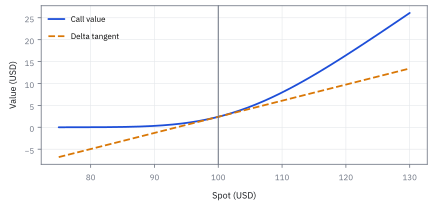

14.1 The Replicating Portfolio and the Black–Scholes Partial Differential Equation (PDE)
ราคาของ option คือต้นทุนของการสร้างมันขึ้นมาเองด้วยหุ้นกับเงินกู้ ไม่ใช่การเดาว่าหุ้นจะขึ้นหรือลง
คุณขาย European call 100 สัญญา สัญญาละ 100 หุ้น รวม 10,000 หุ้น บนหุ้นราคา \$100 strike \$105 อายุ 3 เดือน (0.25 ปี) ดอกเบี้ย 4% ต่อปี ความผันผวน 20% ต่อปี และรับ premium มา \$23,909 หรือ \$2.3909 ต่อหุ้น เทรดเดอร์ฝึกหัดเสนอสองทาง: ซื้อหุ้นมาถือให้ครบ 10,000 หุ้นเผื่อโดนใช้สิทธิ์ หรือไม่ซื้อเลยเพราะวันนี้หุ้นยังต่ำกว่า strike ถ้าพรุ่งนี้หุ้นขยับ \$1 แต่ละทางเสี่ยงเท่าไร และควรถือกี่หุ้น?
ลองตอบก่อนเปิดเฉลย
ผิดทั้งสองทาง ถือครบ 10,000 หุ้นแล้วหุ้นลง \$1 จะเสียจากหุ้น \$10,000 แต่ได้คืนจาก call ที่ขายไว้เพียงราว \$3,677 ขาดทุนสุทธิราว \$6,323 ส่วนไม่ถือเลยแล้วหุ้นขึ้น \$1 จะขาดทุนจาก call ราว \$3,677 จำนวนที่ทำให้การขยับเล็ก ๆ หักล้างกันพอดีคือ 3,677 หุ้น มูลค่า \$367,719 โดยกู้เงินมา \$343,810 แล้วใช้ premium อีก \$23,909 หน้านี้สร้างตัวเลขนี้ขึ้นมา และแสดงว่ามันไม่ขึ้นกับว่าใครเชื่อว่าหุ้นจะขึ้นหรือลง
สิ่งที่เราจะสร้าง
10.1 ให้แบบจำลองราคาหุ้น GBM และ 13.2 ให้ Itô's lemma ซึ่งบอกว่า function ของตัวแปรสุ่มขยับอย่างไร หัวข้อนี้ใช้สองเครื่องมือนั้นตอบคำถามว่า call หนึ่งใบควรราคาเท่าไร โดยไม่ต้องเดาอนาคต วิธีคือสร้างพอร์ตหุ้นกับเงินสดที่ให้เงินเท่ากับ call ทุกกรณี แล้วบอกว่าราคา call ต้องเท่ากับต้นทุนของพอร์ตนั้น ไม่อย่างนั้นจะมีคนทำเงินฟรีได้
เราจะทำโลกที่หุ้นมีแค่สองราคาด้วยมือก่อน แล้วค่อยทำแบบต่อเนื่อง: ส่งการขยับของหุ้นผ่าน Itô เขียนบัญชีของพอร์ตที่ห้ามเติมเงิน จับคู่ส่วนสุ่มให้หักล้างกันจนได้จำนวนหุ้น แล้วจับคู่ส่วนที่เหลือจนได้ Black–Scholes PDE จากนั้นแก้ PDE บนกริดด้วยคอมพิวเตอร์ อ่านมันเป็นงบรายวันของโต๊ะ และจำลองการ hedge จริงด้วยหุ้นสองตัวที่ drift ต่างกันสุดขั้ว
ศัพท์ที่ใช้ในหัวข้อนี้
- European call
- สิทธิ์ซื้อหุ้นที่ราคา strike $K$ ได้เฉพาะวันหมดอายุ $T$ ผู้ถือได้เงิน $\max(S_T-K,0)$ ในวันนั้น เป็นสัญญาที่ง่ายที่สุดที่ยังมีความไม่แน่นอนจริง จึงใช้เรียนกลไกการตั้งราคาทั้งบท
- Replicating portfolio
- พอร์ตหุ้นกับเงินสดที่ให้มูลค่าเท่ากับ option ทุกกรณี ใช้เปลี่ยนคำถาม “option ควรราคาเท่าไร” ซึ่งต้องเดาอนาคต เป็น “สร้างมันเองต้องใช้เงินเท่าไร” ซึ่งตอบได้จากราคาที่เห็นวันนี้
- Self-financing
- กติกาว่าหลังตั้งพอร์ตแล้วห้ามเติมหรือถอนเงิน ซื้อหุ้นเพิ่มต้องใช้เงินสดในพอร์ตเอง ถ้าไม่มีกติกานี้ พอร์ตไหนก็ “เลียนแบบ” อะไรก็ได้ด้วยการแอบเติมเงิน
- Delta ($\Delta$)
- จำนวนหุ้นต่อ call หนึ่งใบที่ทำให้ส่วนสุ่มของพอร์ตกับของ call หักล้างกันพอดี ในหน้านี้จะได้ว่ามันเท่ากับความชันของราคา call เทียบราคาหุ้น
- Arbitrage
- รายการที่ไม่ต้องใช้เงินสุทธิ ไม่มีทางขาดทุน และมีโอกาสได้กำไร เราใช้มันเป็นเครื่องมือพิสูจน์: ถ้าราคาไม่ตรงกับต้นทุนการสร้างซ้ำ จะมีรายการแบบนี้เกิดขึ้น ราคาจึงต้องตรง
- PDE และเงื่อนไขปลายทาง
- สมการที่ผูกอัตราเปลี่ยนตามเวลา ความชัน และความโค้งของราคา option เข้าด้วยกัน สมการอย่างเดียวมีคำตอบได้มาก ต้องบอกด้วยว่าวันหมดอายุราคาเท่ากับ payoff จึงได้ราคาเดียว
สัญลักษณ์และหน่วย
| สัญลักษณ์ | ความหมาย | หน่วย |
|---|---|---|
| $S,\ S_t$ | ราคาหุ้น ณ เวลา $t$ | USD ต่อหุ้น |
| $K,\ T,\ t$ | strike, วันหมดอายุ และเวลาปัจจุบัน | USD, ปี, ปี |
| $r,\ \mu,\ \sigma$ | ดอกเบี้ยต่อเนื่อง, drift ของหุ้น และความผันผวน | ต่อปี, ต่อปี, ต่อรากที่สองของปี |
| $W_t$ | Brownian motion ตัวเดียวที่ขับหุ้น (9.1) | รากที่สองของปี |
| $C(S,t)$ | ราคา call ต่อหุ้นอ้างอิงหนึ่งหุ้น | USD |
| $C_t,\ C_S,\ C_{SS}$ | อัตราเปลี่ยนตามเวลา ความชัน และความโค้งของ $C$ | USD ต่อปี, ไม่มีหน่วย, ต่อ USD |
| $\Delta,\ B,\ V$ | จำนวนหุ้นต่อ call, เงินสดในพอร์ต (ติดลบคือกู้) และมูลค่าพอร์ต | หุ้น, USD, USD |
| $h$ | ความยาวหนึ่งก้าวเวลา หนึ่งวันปฏิทินคือ $1/365$ ปี | ปี |
| $\delta,\ n$ | ระยะห่างของกริดราคาในขั้นที่ 7 และจำนวนครั้งที่ปรับ hedge ในขั้นที่ 10 | USD, ครั้ง |
ขั้นที่ 1 — ลองด้วยมือ: หุ้นพรุ่งนี้มีได้แค่สองราคา
โจทย์ให้อะไรมาบ้าง: หุ้นวันนี้ \$100 พรุ่งนี้เป็นได้แค่ \$110 หรือ \$90 call strike \$105 หมดอายุพรุ่งนี้ ดอกเบี้ยข้ามคืนถือเป็นศูนย์ เพื่อนคนหนึ่งเชื่อว่าหุ้นขึ้นด้วยโอกาส 90% อีกคนเชื่อ 10% หาจำนวนหุ้น $\Delta$ กับเงินสด $B$ ที่ทำให้พอร์ตจ่ายเท่ากับ call ทั้งสองทาง
คำตอบ: ถือหุ้น 0.25 หุ้นและกู้ \$22.5 พอร์ตนี้ใช้เงิน \$2.5 และจ่าย \$5 หรือ \$0 ตรงกับ call ทุกกรณี ราคา call จึงต้องเป็น \$2.5 ไม่ใช่ \$4.5 หรือ \$0.5 ที่ได้จากการเฉลี่ย payoff ด้วยโอกาสที่แต่ละคนเชื่อ ถ้ามีคนยอมซื้อ call ที่ \$4.5 เราขายให้ แล้วใช้ \$2.5 สร้างพอร์ตเลียนแบบ เก็บ \$2 ทันที พรุ่งนี้พอร์ตจ่ายภาระของ call ได้พอดีไม่ว่าหุ้นไปทางไหน
ตรวจเองใน 10 วินาที: $110(0.25)-22.5=5$ และ $90(0.25)-22.5=0$ สังเกตว่าโอกาส 90% หรือ 10% ไม่อยู่ในสมการเลย และตัวเลข $q=0.5$ ที่ทำให้ $100=q(110)+(1-q)(90)$ ให้ $0.5(5)=2.5$ พอดี 14.2 จะใช้ความคิดนี้กับโลกต่อเนื่อง ส่วน 18.3 จะต่อโลกสองราคาเป็นต้นไม้หลายชั้น
ขั้นที่ 2 — ของที่ให้มา: หุ้นมีแหล่งสุ่มแหล่งเดียว และกำลังสองของการขยับไม่หายไป
ในโลกจริงหุ้นไม่ได้มีแค่สองราคา เราใช้ GBM ของ 10.1 เป็นของที่ให้มา และใช้กฎคูณของ 13.2 สำหรับก้าวเวลาสั้นมาก สิ่งที่ต้องสังเกตมีสองข้อ: มี $dW$ อยู่ก้อนเดียว และกำลังสองของการขยับมีขนาดเท่ากับ $dt$ ไม่ใช่เล็กจนทิ้งได้
กฎบรรทัดที่สองมาจากขนาดของ $dW$ ซึ่งโตตาม $\sqrt{dt}$ (9.1) กำลังสองของมันจึงมีขนาด $dt$ ส่วน $(dt)^2$ กับ $dt\,dW$ เล็กกว่า $dt$ มากเมื่อก้าวสั้นลง จึงทิ้งได้ 9.5 เรียกผลนี้ว่า quadratic variation
ตัวเลขตรวจได้: ในหนึ่งวันปฏิทิน การขยับปกติของหุ้น \$100 คือ $\sigma S\sqrt{1/365}=20\sqrt{0.0027397}\approx\$1.0468$ และ $1.0468^2\approx1.0959=0.04(10{,}000)/365$ กำลังสองของการขยับจึงมีขนาดที่รู้ล่วงหน้า แม้ทิศจะสุ่ม
ขั้นที่ 3 — ส่งการขยับของหุ้นผ่านราคา call
ราคา call เป็น function ของราคาหุ้นและเวลา จึงขยับตามหุ้น คำถามคือขยับอย่างไร ใช้ Itô's lemma ของ 13.2 ซึ่งคือการกระจาย Taylor ถึงอันดับสองในราคาหุ้น แล้วแทนผลของขั้นที่ 2
พจน์อันดับสองยังอยู่เพราะ $(dS)^2$ มีขนาด $dt$ ตามขั้นที่ 2 นี่คือจุดที่ต่างจาก calculus ปกติ และเป็นที่มาของพจน์ความโค้ง $\tfrac12\sigma^2S^2C_{SS}$ ที่จะกลายเป็นหัวใจของ PDE
บรรทัดสุดท้ายจัดกลุ่มเป็นสองก้อน: ก้อนที่คูณ $dt$ ซึ่งรู้ล่วงหน้า และก้อนที่คูณ $dW$ ซึ่งสุ่ม ตัวคูณของก้อนสุ่มคือ $\sigma SC_S$ ขั้นที่ 5 จะเอาตัวนี้ไปจับคู่กับพอร์ต
ขั้นที่ 4 — บัญชีของพอร์ตที่ห้ามเติมเงิน
พอร์ตถือหุ้น $\Delta$ หุ้นกับเงินสด $B$ บรรทัดแรกเป็นนิยาม บรรทัดที่เหลือไล่บัญชีจริงสองจังหวะ: ช่วงที่ถือเฉย ๆ กับตอนปรับจำนวนหุ้น เพื่อดูว่าทำไมมูลค่าพอร์ตขยับแค่ $\Delta\,dS+rB\,dt$ ไม่มีพจน์ $S\,d\Delta$
บรรทัดที่สองคือช่วงที่จำนวนหุ้นคงที่: เงินเปลี่ยนเพราะหุ้นขยับกับดอกเบี้ยเท่านั้น บรรทัดที่สามคือตอนซื้อหุ้นเพิ่ม $\Delta'-\Delta$ หุ้น ขาหุ้นเพิ่มเท่าไร เงินสดก็ลดเท่านั้น มูลค่ารวมจึงไม่เปลี่ยนในจังหวะซื้อขาย
ให้ $h$ สั้นลงแล้ว $e^{rh}-1\approx rh$ ได้บรรทัดสุดท้าย ถ้าเขียนแค่ $d(\Delta S)=\Delta\,dS+S\,d\Delta$ แล้วลืมว่าเงินสดจ่าย $S\,d\Delta$ ออกไป จะได้พอร์ตที่แอบเติมเงินได้ ขั้นที่ 8 จะดูตัวเลขจริงของบัญชีนี้
ขั้นที่ 5 — เลือกจำนวนหุ้นให้ส่วนสุ่มหักล้างกัน
ตอนนี้มีสองสิ่งที่ขับด้วย $dW$ ก้อนเดียวกัน คือ call กับพอร์ต ถ้าทำให้ตัวคูณของ $dW$ เท่ากัน ส่วนต่างของสองสิ่งจะไม่เหลือความสุ่มเลย จึงแทน $dS$ ลงในบัญชีของขั้นที่ 4 แล้วเทียบกับขั้นที่ 3
บรรทัดที่สามคือหัวใจ: จำนวนหุ้นไม่ได้ถูกนิยามขึ้นลอย ๆ มันคือคำตอบของสมการที่บังคับให้ความสุ่มสองฝั่งเท่ากัน ตัด $\sigma S$ ซึ่งเป็นบวกออกทั้งสองข้าง ได้ว่าจำนวนหุ้นเท่ากับความชันของราคา call นี่คือที่มาของคำว่า delta hedge
บรรทัดสุดท้ายบอกเงินสดที่ต้องมีเพื่อให้พอร์ตเริ่มที่มูลค่าเท่า call สำหรับ call ค่านี้ติดลบเสมอ เพราะ $SC_S$ มากกว่า $C$ แปลว่าต้องกู้เงินมาซื้อหุ้น เหมือนขั้นที่ 1 ที่กู้ \$22.5
ขั้นที่ 6 — เทียบส่วนที่รู้ล่วงหน้า แล้ว μ ก็หายไป
หลังเลือก $\Delta=C_S$ ส่วนต่าง $C-V$ เริ่มที่ศูนย์และไม่มีความสุ่มเหลือ ของที่รู้ผลล่วงหน้าต้องโตเท่าดอกเบี้ย ซึ่งสำหรับของที่มีค่าศูนย์คือไม่โตเลย ไม่อย่างนั้นคนจะยืมเงินมาทำกำไรฟรี ส่วนที่คูณ $dt$ ของสองฝั่งจึงต้องเท่ากัน
ฝั่งซ้ายของบรรทัดแรกมาจากขั้นที่ 3 ฝั่งขวามาจากขั้นที่ 5 แล้วแทน $\Delta=C_S$ และ $B=C-SC_S$ พจน์ $\mu SC_S$ อยู่ทั้งสองฝั่งพอดีจึงตัดกันทิ้ง อัตราโตที่คาดของหุ้นหายไปจากสมการ
มันหายเพราะหุ้นที่ถือไว้ hedge พาทั้งความสุ่มและ drift ของหุ้นมาด้วยกัน พอหักความสุ่มจนหมด drift ก็ถูกหักไปพร้อมกัน คนที่เชื่อว่าหุ้นจะขึ้นแรงกับคนที่เชื่อว่าจะลง จึงต้องตั้งราคา call เท่ากัน บรรทัดสุดท้ายคือ Black–Scholes PDE
สิ่งที่ไม่หายคือ $\sigma$ เพราะมันมาจากกำลังสองของการขยับ ซึ่ง hedge เชิงเส้นลบทิ้งไม่ได้ ราคา option จึงเป็นราคาของความผันผวน ไม่ใช่ราคาของทิศทาง ขั้นที่ 9 จะเห็นพจน์นี้เป็นเงินจริงรายวัน
ขั้นที่ 7 — ปิดโจทย์ด้วย payoff แล้วแก้ PDE บนกริดโดยไม่ใช้สูตร
โจทย์ให้อะไรมาบ้าง: PDE จากขั้นที่ 6 กับเงื่อนไขว่าวันหมดอายุราคาเท่ากับ payoff ที่ขอบหุ้นศูนย์ call เป็นศูนย์ และเมื่อหุ้นสูงมาก call ใกล้ $S-Ke^{-r(T-t)}$ เราแทนอนุพันธ์ด้วยผลต่างบนกริดราคาห่างกัน $\delta$ แล้วเดินถอยหลังจากวันหมดอายุครั้งละ $h$ ปี นี่คือ explicit finite difference ที่ 21.1 จะขยายต่อ
ก้าวแรกที่ $S=105$ ใช้ $\delta=1$ ค่าก่อนหน้าคือ payoff $C_{104}=0,\ C_{105}=0,\ C_{106}=1$ จึงได้ $\tfrac12\sigma^2S^2=0.02(11{,}025)=220.5$ และ $rS/2=2.1$ ทำต่อทุกจุดทุกก้าวจนถึงวันนี้ได้ตารางนี้
| $\delta$ (USD) | จำนวนก้าว | ราคาที่ $S=100$ | ห่างจาก \$2.390877 |
|---|---|---|---|
| 1 | 2,000 | 2.387011 | −0.003866 |
| 0.5 | 8,000 | 2.389911 | −0.000966 |
| 0.25 | 32,000 | 2.390636 | −0.000241 |
คำตอบ: PDE กับ payoff อย่างเดียวให้ราคาเข้าหา \$2.3909 ต่อหุ้น เท่ากับ premium ในโจทย์เปิดเรื่อง และเท่ากับสูตรปิดที่ 14.2 จะ derive ส่วนความชันของกริดที่ $\delta=0.25$ คือ 0.36771 ใกล้ $\Delta=0.367719$ ที่ใช้ต่อในขั้นที่ 8 ก้าวแรกบอกเรื่องสำคัญ: มูลค่า 220.5 จาก 222.6 ส่วนมาจากพจน์ความโค้ง ค่าเวลาของ option เกิดจากความโค้งตรง strike
ตรวจเองใน 10 วินาที: ความคลาดเคลื่อนลดราวสี่เท่าทุกครั้งที่ $\delta$ ลดครึ่ง ($3.866/0.966\approx4.0$) และจำนวนก้าวต้องเพิ่มสี่เท่าด้วย เพราะ explicit scheme จะระเบิดถ้า $h\sigma^2S_{\max}^2/\delta^2$ เกินราว 0.5 ที่กริดสูงสุด \$300 ทั้งสามแถวใช้ค่า 0.45
ขั้นที่ 8 — hedge ของ 10,000 call และบัญชีหนึ่งวันถัดมา
โจทย์ให้อะไรมาบ้าง: ราคา call $C=2.3909$ และ $\Delta=C_S=0.367719$ ต่อหุ้น (จากขั้นที่ 7 และสูตรของ 14.2) ผู้ขาย 10,000 call ถือพอร์ตเลียนแบบไว้คู่กัน หนึ่งวันปฏิทินต่อมา $h=1/365$ หุ้นขึ้นเป็น \$101 และ delta ใหม่ของ call คือ 0.404635
คำตอบ: ซื้อหุ้น 3,677 หุ้น มูลค่า \$367,719 กู้ \$343,810 และใช้ premium \$23,909 ตรงกับเฉลยของโจทย์เปิดเรื่อง วันถัดมาพอร์ตมีค่า \$2.754828 ต่อ call ต้องซื้อหุ้นเพิ่ม 0.036916 หุ้นด้วยเงินสด \$3.7285 เงินสดจึงเป็น −\$38.1133 ขาหุ้นเป็น \$40.8681 มูลค่ารวมยังเป็น \$2.754828 เท่าเดิม ส่วน call มีค่า \$2.751877 พอร์ตจึงนำ call อยู่ \$0.00295 ต่อ call หรือ \$29.51 ต่อ 10,000 call
ตรวจเองใน 10 วินาที: $367{,}719-343{,}810=23{,}909$ และ $40.8681-38.1133=2.7548$ การซื้อหุ้นเพิ่ม \$3.73 ไม่ใช่ขาดทุน มันคือการย้ายเงินจากขาเงินสดไปขาหุ้น
Figure 14.1a — งบดุลของพอร์ตเลียนแบบ call หนึ่งใบ

ขั้นที่ 9 — อ่าน PDE เป็นงบรายวันของโต๊ะ
โจทย์ให้อะไรมาบ้าง: ที่ $S=100$ วันนี้ ค่าจากสูตรของ 14.2 คือ $C_t=\Theta=-8.911341$ USD ต่อปี, $C_S=0.367719$ และ $C_{SS}=\Gamma=0.037681$ ต่อ USD เราแยกสี่พจน์ของ PDE แล้วแปลงเป็นต่อวันปฏิทินด้วย $h=1/365$ เพราะอายุ option นับวันปฏิทิน (9.2)
คำตอบ: สามพจน์แรกรวมกันได้ 0.095635 เท่ากับ $rC$ ทุกหลัก PDE ผ่าน ในภาษาโต๊ะ ผู้ขาย 10,000 call ที่ hedge แล้วได้ค่าเวลาวันละ \$244.15 จ่ายดอกเบี้ยเงินกู้วันละ \$37.68 และเสียจากความโค้งราว $\tfrac12\Gamma(\Delta S)^2$ ต่อหุ้นทุกครั้งที่หุ้นขยับ ถ้าหุ้นขยับเท่าการขยับปกติ \$1.0468 จะเสีย \$206.47 พอดีกับส่วนต่าง $244.15-37.68$ ขยับน้อยกว่านั้นผู้ขายได้ ขยับมากกว่านั้นผู้ขายเสีย
ตรวจเองใน 10 วินาที: $-0.024415+0.020647=-0.003768$ ตรงกับบรรทัดดอกเบี้ย ระวังนาฬิกา: ในแบบจำลองทุกวันปฏิทินมีการขยับเท่ากัน แต่หุ้นจริงขยับเฉพาะวันทำการ ถ้านับความผันผวนแบบ 252 วัน การขยับปกติในวันทำการคือ $20/\sqrt{252}\approx\$1.26$ ทั้งสองฝั่งของงบต้องใช้นาฬิกาเดียวกัน
Figure 14.1b — สี่พจน์ของ PDE ปิดบัญชีพอดี

Figure 14.1c — hedge เชิงเส้นตามความชันได้ แต่ตามความโค้งไม่ได้

Figure 14.1d — ความคลาดเคลื่อนของเส้นสัมผัสโตตามกำลังสองของการขยับ

ขั้นที่ 10 — จำลองการ hedge จริง: drift ต่างกันสุดขั้ว ต้นทุนเท่ากัน
โจทย์ให้อะไรมาบ้าง: ขาย call หนึ่งใบที่ \$2.390877 แล้ว hedge ตามขั้นที่ 5 แต่ปรับได้แค่ $n$ ครั้งตลอดอายุ: 13 ครั้ง (รายสัปดาห์), 63 ครั้ง (วันทำการละครั้ง เพราะ $0.25\times252=63$ ตาม 1.1) และ 252 ครั้ง จำลองหุ้น 10,000 เส้นทางด้วย GBM เครื่องสุ่ม mulberry32 seed 2024 กับ Box–Muller แบบเดียวกับ 8.9 ลองสองโลก: หุ้นโต $\mu=12\%$ ต่อปีแบบ 10.1 กับหุ้นดิ่ง $\mu=-10\%$ ใช้เลขสุ่มชุดเดียวกัน วัดความคลาดเคลื่อนปลายทาง = มูลค่าพอร์ตลบ payoff
| $\mu$ | $n$ | ค่าเฉลี่ย (USD ต่อ call) | SD (USD ต่อ call) |
|---|---|---|---|
| +12% | 13 | +0.0234 | 0.9488 |
| +12% | 63 | +0.0090 | 0.4436 |
| +12% | 252 | −0.0017 | 0.2228 |
| −10% | 13 | −0.0023 | 0.8592 |
| −10% | 63 | +0.0017 | 0.4031 |
| −10% | 252 | −0.0014 | 0.2057 |
คำตอบ: ทั้งสองโลกให้ค่าเฉลี่ยใกล้ศูนย์ ห่างไม่เกินราว 2.5 SE (SE คือ SD หารด้วย $\sqrt{10{,}000}=100$ ตาม 3.3) ทั้งที่หุ้นโลกหนึ่งโตเฉลี่ย 12% อีกโลกดิ่ง 10% ต่อปี เงิน \$2.3909 พอสำหรับสร้าง payoff ในทั้งสองโลก นี่คือตัวเลขยืนยันขั้นที่ 6 ว่า $\mu$ ไม่อยู่ในราคา ส่วน SD ลดราวครึ่งเมื่อปรับถี่ขึ้นสี่เท่า ($0.4436/0.2228\approx1.99$) เพราะความคลาดเคลื่อนรายก้าวเป็นผลรวมของก้อนสุ่มเล็ก ๆ ที่หักล้างกันบางส่วน
ตรวจเองใน 10 วินาที: ผู้ขาย 10,000 call ที่ปรับ hedge วันละครั้งยังมี SD ของผลปลายทางราว \$4,436 หรือ 18.6% ของ premium \$23,909 การ hedge ต่อเนื่องในขั้นที่ 5 เป็นอุดมคติ ของจริงเหลือความเสี่ยงที่ลดได้ด้วยการปรับถี่ขึ้น แต่ทุกการปรับมีต้นทุน
คำถามที่ควรถามออกมาดัง ๆ
ถ้าทุกคนเชื่อว่าหุ้นจะขึ้น ทำไม call ไม่แพงขึ้น? เพราะความเชื่อนั้นอยู่ในราคาหุ้นวันนี้แล้ว call ถูกตั้งราคาเทียบกับหุ้น ไม่ได้เทียบกับอนาคต ขั้นที่ 10 แสดงว่าเงินก้อนเดียวกันสร้าง payoff ได้ทั้งในโลกที่หุ้นโต 12% และโลกที่ดิ่ง 10%
ทำไม σ ไม่หายไปแบบ μ? μ อยู่ในส่วนเชิงเส้นของการขยับ ซึ่งหุ้นที่ถือไว้หักทิ้งได้ ส่วน σ อยู่ในกำลังสองของการขยับ ซึ่งเป็นบวกเสมอไม่ว่าหุ้นไปทางไหน หุ้นที่ถือเป็นเส้นตรงจึงหักทิ้งไม่ได้ Figure 14.1c คือภาพของเรื่องนี้
PDE นี้ใช้กับ put ได้ไหม? ได้ทุกสัญญาที่ขึ้นกับหุ้นตัวนี้และเวลา เพราะขั้นที่ 3 ถึง 6 ไม่ได้ใช้ payoff เลย ที่ต่างกันมีแค่เงื่อนไขปลายทาง put ใช้ $(K-S)^+$ แทน ส่วนหุ้นเองก็ผ่าน PDE: $V=S$ ให้ $0+rS+0-rS=0$
ความผิดที่ให้ตัวเลขผิดโดยไม่มีอะไรเตือน
นับการซื้อหุ้นเป็นกำไรขาดทุน: ในขั้นที่ 8 การซื้อหุ้นเพิ่ม 0.036916 หุ้นใช้เงิน \$3.7285 ต่อ call ถ้าระบบนับ $S\,d\Delta$ เป็น P&L โดยไม่ลงเงินสดฝั่งตรงข้าม จะเห็นขาดทุนปลอม \$37,285 บน 10,000 call ในวันเดียว ทั้งที่มูลค่าพอร์ตไม่เปลี่ยน วิธีกันคือบันทึกจำนวนหุ้นกับบัญชีเงินสดคู่กันทุกครั้ง
ใช้โอกาสใช้สิทธิ์เป็นจำนวนหุ้น: 14.2 จะแสดงว่าโอกาสที่ call นี้จะจบเหนือ strike ภายใต้การตั้งราคาคือ 33.07% ถ้าถือ 3,307 หุ้นแทน 3,677 หุ้น จะเหลือความเสี่ยงราว \$370 ต่อการขยับ \$1 ทุกวันโดยไม่รู้ตัว จำนวนหุ้นมาจากความชันในขั้นที่ 5 ไม่ใช่จากโอกาส
ปนนาฬิกา: theta ต่อวันหารด้วย 365 แต่ความผันผวนรายวันหารด้วย $\sqrt{252}$ ในงบเดียวกัน จะได้ breakeven \$1.26 เทียบกับค่าเวลาที่คิดแบบ \$1.05 งบไม่ปิด ต้องเลือกนาฬิกาเดียวแล้วบอกไว้ในรายงาน
ใช้ทำอะไรบนโต๊ะจริง
ผู้ค้า option ไม่ได้ขาย call เพราะเดาว่าหุ้นจะลง เขาขายที่ราคาต้นทุนการ hedge บวกส่วนเผื่อ แล้วถือพอร์ตเลียนแบบตามขั้นที่ 5 กำไรขาดทุนรายวันจึงแตกเป็นสามก้อนตามขั้นที่ 9: ค่าเวลา ดอกเบี้ย และความโค้งคูณกำลังสองของการขยับจริง ถ้าหุ้นขยับจริงน้อยกว่าที่ $\sigma$ ในราคาบอก ผู้ขายได้เงิน ถ้ามากกว่าผู้ขายเสีย ทุกโต๊ะจึงคุยกันเรื่อง “ความผันผวนที่เกิดจริงเทียบกับที่อยู่ในราคา” มากกว่าเรื่องทิศทาง
ขั้นที่ 10 เป็นเหตุผลที่โต๊ะต้องกำหนดความถี่ในการปรับ hedge: ปรับถี่ขึ้นสี่เท่าลด SD ได้ครึ่งเดียว แต่ต้นทุนซื้อขายเพิ่มสี่เท่า 18.4 จะคำนวณ P&L ของการ delta hedge แบบนี้โดยละเอียด
สามโจทย์ตรวจความเข้าใจ
1. ทำขั้นที่ 1 ซ้ำ แต่ให้ดอกเบี้ย 4% ต่อปีนาน 0.25 ปี เงินสด \$1 จึงโตเป็น $e^{0.01}=1.010050$ ราคา call เป็นเท่าไร?
เฉลย
สมการสองทางยังให้ $\Delta=5/20=0.25$ แต่เงินกู้ต้องคืน $90(0.25)=22.5$ พรุ่งนี้ วันนี้จึงกู้ได้ $22.5/1.010050=22.2761$ ราคา $=25-22.2761=\$2.7239$ แพงกว่ากรณีดอกเบี้ยศูนย์ เพราะเงินกู้ถูกลง ตรวจด้วย $q=(100(1.010050)-90)/20=0.550251$ แล้ว $0.550251(5)/1.010050=2.7239$
2. ในโลกสองราคาของขั้นที่ 1 (ดอกเบี้ยศูนย์) หาพอร์ตเลียนแบบ put strike \$105 และตรวจว่า $C-P=S_0-K$
เฉลย
put จ่าย 0 เมื่อ \$110 และ 15 เมื่อ \$90 จึงได้ $\Delta=(0-15)/20=-0.75$ (short หุ้น 0.75 หุ้น) และ $B=15+0.75(90)=82.5$ ราคา $=-75+82.5=\$7.5$ และ $2.5-7.5=-5=100-105$ ตรงกับ put–call parity ที่ 14.4 จะพิสูจน์แบบไม่ใช้แบบจำลอง
3. สัญญาหนึ่งจ่าย $S_T^2$ ในวันหมดอายุ ลองแทน $V=S^2e^{(r+\sigma^2)(T-t)}$ ลงใน PDE แล้วหามูลค่าวันนี้ที่ $S=100$, $T-t=0.25$ พร้อมจำนวนหุ้นที่ต้องถือ
เฉลย
$V_t=-(r+\sigma^2)V$, $V_S=2V/S$, $V_{SS}=2V/S^2$ แทนแล้วได้ $-(r+\sigma^2)V+2rV+\sigma^2V-rV=0$ ผ่าน และวันหมดอายุเลขชี้กำลังเป็นศูนย์จึงได้ $S_T^2$ พอดี มูลค่า $=10{,}000e^{0.08(0.25)}=10{,}000e^{0.02}=10{,}202.01$ และ $\Delta=V_S=200e^{0.02}=204.04$ หุ้น ตัวคูณ $e^{\sigma^2(T-t)}$ มาจากความโค้งของ $S^2$ ล้วน ๆ
คำนวณซ้ำด้วย JavaScript
รันใน Node.js ได้โดยไม่ติดตั้งแพ็กเกจ โค้ดนี้ตรวจ input ก่อนคำนวณ แก้โลกสองราคา คำนวณงบของ PDE ไล่บัญชีหนึ่งวัน แก้ PDE บนกริดโดยไม่ใช้สูตรปิด และจำลองการ hedge แบบมี seed แล้วพิมพ์ตัวเลขทุกขั้นเป็น JSON บรรทัดเดียว
// Replicating a European call: two-state toy, the PDE, a grid solve and discrete hedging.
// Local names for the Math functions: shorter to read, and fast in any sandbox.
const { abs, exp, log, sqrt, max, sin, cos, imul, round, PI } = Math;
function checkInputs(S, K, T, r, sigma) {
if (![S, K, T, r, sigma].every(Number.isFinite)) throw new TypeError('Inputs must be finite numbers');
if (S <= 0 || K <= 0) throw new RangeError('Spot and strike must be positive');
if (T <= 0) throw new RangeError('Time to expiry must be positive (years)');
if (sigma <= 0) throw new RangeError('Volatility must be positive (per year, 0.20 = 20%)');
}
const phi = x => exp(-0.5 * x * x) / sqrt(2 * PI);
// Normal CDF: Taylor series near the centre, continued fraction in the tails.
function Phi(x) {
const a = abs(x);
if (a <= 3) {
let term = a, sum = a;
for (let n = 1; n < 200 && term > 1e-17 * sum; n++) { term *= a * a / (2 * n + 1); sum += term; }
return x >= 0 ? 0.5 + phi(a) * sum : 0.5 - phi(a) * sum;
}
let f = a;
for (let k = 120; k >= 1; k--) f = a + k / f;
return x >= 0 ? 1 - phi(a) / f : phi(a) / f;
}
// Black-Scholes call and the three derivatives the PDE uses (price per share, time in years).
function call(S, K, T, r, sigma) {
checkInputs(S, K, T, r, sigma);
const sT = sigma * sqrt(T);
const d1 = (log(S / K) + (r + 0.5 * sigma * sigma) * T) / sT, d2 = d1 - sT;
const price = S * Phi(d1) - K * exp(-r * T) * Phi(d2);
const delta = Phi(d1), gamma = phi(d1) / (S * sT);
const theta = -S * phi(d1) * sigma / (2 * sqrt(T)) - r * K * exp(-r * T) * Phi(d2);
return {price, delta, gamma, theta, cash: price - S * delta};
}
// One period, two prices: hold delta shares and a bond so both outcomes match the payoff.
function oneStep(S0, up, down, K, growth) {
if (!(down < up) || !(growth > 0)) throw new RangeError('Need down < up and a positive growth factor');
const pu = max(up - K, 0), pd = max(down - K, 0);
const delta = (pu - pd) / (up - down), bond = (pd - delta * down) / growth;
return {delta, bond, price: delta * S0 + bond, q: (S0 * growth - down) / (up - down)};
}
const S = 100, K = 105, T = 0.25, r = 0.04, sigma = 0.2, h = 1 / 365;
const now = call(S, K, T, r, sigma);
// One calendar day later at S = 101: the old hedge's value, the rebalancing trade, the new call value.
function dayLater(S1) {
const next = call(S1, K, T - h, r, sigma);
const before = now.delta * S1 + now.cash * exp(r * h);
const buy = next.delta - now.delta;
return {newDelta: next.delta, buy, cost: buy * S1, before, after: before, callValue: next.price, error: before - next.price,
cashAfter: now.cash * exp(r * h) - buy * S1};
}
const pdeResidual = (S1, T1) => { const g = call(S1, K, T1, r, sigma);
return g.theta + r * S1 * g.delta + 0.5 * sigma * sigma * S1 * S1 * g.gamma - r * g.price; };
// Explicit finite differences: march the PDE backward from the payoff, no closed form used.
function gridPrice(dS, steps, Smax = 300) {
const n = round(Smax / dS), dt = T / steps;
if (dt * sigma * sigma * Smax * Smax / (dS * dS) > 0.5) throw new RangeError('Time step too large: explicit scheme unstable');
let C = Array.from({length: n + 1}, (_, i) => max(i * dS - K, 0));
for (let k = 1; k <= steps; k++) {
const N = C.slice();
for (let i = 1; i < n; i++) {
const Si = i * dS, cSS = (C[i + 1] - 2 * C[i] + C[i - 1]) / (dS * dS), cS = (C[i + 1] - C[i - 1]) / (2 * dS);
N[i] = C[i] + dt * (0.5 * sigma * sigma * Si * Si * cSS + r * Si * cS - r * C[i]);
}
N[0] = 0; N[n] = Smax - K * exp(-r * k * dt);
C = N;
}
const i = round(S / dS);
return {dS, steps, price: C[i], delta: (C[i + 1] - C[i - 1]) / (2 * dS)};
}
// Seeded generator (mulberry32) and Box-Muller normals, so every reader gets the same paths.
function normals(seed) {
let a = seed >>> 0, spare = null;
const u = () => { a = (a + 0x6D2B79F5) >>> 0; let t = imul(a ^ (a >>> 15), a | 1);
t ^= t + imul(t ^ (t >>> 7), t | 61); return (((t ^ (t >>> 14)) >>> 0) + 0.5) / 4294967296; };
return () => { if (spare !== null) { const z = spare; spare = null; return z; }
const rad = sqrt(-2 * log(u())), ang = 2 * PI * u(); spare = rad * sin(ang); return rad * cos(ang); };
}
// Sell one call for its model price, hedge n times, report final (portfolio - payoff) per call.
function hedgeError(mu, n, paths, seed) {
if (!Number.isInteger(n) || n < 1 || !Number.isInteger(paths) || paths < 2) throw new RangeError('Need whole numbers: n >= 1, paths >= 2');
const z = normals(seed), dt = T / n, dOf = (x, tau) => Phi((log(x / K) + (r + 0.5 * sigma * sigma) * tau) / (sigma * sqrt(tau)));
let sum = 0, sum2 = 0;
for (let p = 0; p < paths; p++) {
let St = S, d = now.delta, cash = now.price - d * St;
for (let k = 1; k <= n; k++) {
St *= exp((mu - 0.5 * sigma * sigma) * dt + sigma * sqrt(dt) * z());
cash *= exp(r * dt);
if (k < n) { const nd = dOf(St, T - k * dt); cash -= (nd - d) * St; d = nd; }
}
const e = d * St + cash - max(St - K, 0);
sum += e; sum2 += e * e;
}
const mean = sum / paths, sd = sqrt((sum2 - paths * mean * mean) / (paths - 1));
return {mu, n, mean, sd, se: sd / sqrt(paths)};
}
const hedging = [];
for (const mu of [0.12, -0.10]) for (const n of [13, 63, 252]) hedging.push(hedgeError(mu, n, 10000, 2024));
console.log(JSON.stringify({
toy: oneStep(100, 110, 90, 105, 1), toyWithRate: oneStep(100, 110, 90, 105, exp(r * T)),
now, position: {shares: 1e4 * now.delta, stock: 1e4 * S * now.delta, borrow: -1e4 * now.cash, net: 1e4 * now.price},
pdeTerms: {theta: now.theta, carry: r * S * now.delta, convexity: 0.5 * sigma * sigma * S * S * now.gamma, rC: r * now.price},
perDay: {theta: now.theta * h, convexity: 0.5 * now.gamma * (sigma * S) ** 2 * h, interest: r * now.cash * h, move: sigma * S * sqrt(h)},
day: dayLater(101), residuals: [[90, 0.25], [110, 0.25], [100, 0.05], [130, 1]].map(([a, b]) => pdeResidual(a, b)),
grid: [[1, 2000], [0.5, 8000], [0.25, 32000]].map(([a, b]) => gridPrice(a, b)),
hedging
}));ที่มาที่ไป
Louis Bachelier ใช้การเดินสุ่มกับราคาในตลาดปารีสตั้งแต่ปี 1900 แต่ราคา option ยังต้องเดาอัตราผลตอบแทนที่คาดของหุ้นอยู่หลายสิบปี Fischer Black กับ Myron Scholes และ Robert Merton ตีพิมพ์ในปี 1973 ว่าพอร์ตที่ปรับ hedge ต่อเนื่องหักความสุ่มออกได้หมด ของที่ไม่เสี่ยงต้องโตเท่าดอกเบี้ย และ drift ของหุ้นจึงหายไปจากราคา Scholes กับ Merton ได้รางวัลโนเบลเศรษฐศาสตร์ปี 1997 ส่วน Black เสียชีวิตไปก่อนในปี 1995
ข้อจำกัด: หน้านี้สมมติอะไร และของจริงเป็นอย่างไร
| เรื่อง | หน้านี้สมมติว่า | ของจริง | ผลเวลาใช้งาน |
|---|---|---|---|
| การปรับ hedge | ปรับได้ต่อเนื่องและฟรี | ปรับเป็นครั้ง ๆ และมีต้นทุนทุกครั้ง | เหลือความเสี่ยงแบบขั้นที่ 10 และต้นทุนกินส่วนต่าง |
| เส้นทางราคา | ต่อเนื่อง ไม่กระโดด | กระโดดตอนมีข่าวหรือข้ามคืน | hedge พลาดทั้งก้อนในวันที่ต้องการมันที่สุด |
| ความผันผวน | รู้ค่าและคงที่ | ไม่รู้ค่าและเปลี่ยนตลอด (14.4 ถึง 14.7) | ราคาและจำนวนหุ้นที่คำนวณผิดไปตาม σ ที่ใส่ |
| ดอกเบี้ย | กู้และฝากที่อัตราเดียวกัน | กู้แพงกว่าฝาก และการ short หุ้นมีค่ายืม | ราคาเป็นช่วง ไม่ใช่จุดเดียว |
สิ่งที่ควรตอบได้หลังอ่าน
- ราคา option คือต้นทุนของพอร์ตหุ้นกับเงินสดที่ให้เงินเท่ากันทุกกรณี ในโลกสองราคาได้ \$2.5 ไม่ว่าจะเชื่อว่าหุ้นขึ้นด้วยโอกาส 90% หรือ 10%
- บัญชี self-financing ให้ $dV=\Delta\,dS+rB\,dt$ การซื้อหุ้นเพิ่มคือการย้ายเงิน ไม่ใช่กำไรขาดทุน
- จับคู่ส่วนสุ่มได้ $\Delta=C_S$ จับคู่ส่วนที่เหลือได้ $C_t+rSC_S+\tfrac12\sigma^2S^2C_{SS}-rC=0$ และ $\mu$ หายไปเพราะหุ้นที่ hedge พา drift ออกไปพร้อมความสุ่ม
- ขาย 10,000 call ราคา \$2.3909: ถือ 3,677 หุ้น กู้ \$343,810 และงบรายวันคือได้ค่าเวลา \$244.15 จ่ายดอกเบี้ย \$37.68 เสียความโค้ง \$206.47 เมื่อหุ้นขยับ \$1.05
- hedge เป็นครั้ง ๆ เหลือความคลาดเคลื่อนที่ SD ลดครึ่งเมื่อปรับถี่ขึ้นสี่เท่า และไม่ขึ้นกับ drift ของหุ้น
14.2 จะแก้ PDE นี้ออกมาเป็นสูตรปิด โดยคิดค่าเฉลี่ยของ payoff ภายใต้การถ่วงน้ำหนักที่ใช้ $r$ แทน $\mu$ แล้วได้ \$2.3909 ตัวเดียวกับกริดในขั้นที่ 7